Ultra-Sensitive Sensor–Actuator Visuo-Tactile Skin Using Moiré Patterns
An inflatable visuo-tactile skin with dual-sided 330 μm optical gratings. Contact and pneumatic deformation shift low-frequency moiré fringes, allowing the same soft membrane to estimate touch and track its actuation state.
Synchronized views of moiré fringe evolution and pneumatic membrane motion. Video is experimental footage from the project deck.
3.78 mNtiny-force normal-force MAE
0.094 mmtiny-force contact-position MAE
0.151 hPacalibrated actuation-state MAE
4.146 gdynamic mass-estimation MAE
Optical principle
Microscopic strain becomes visible fringe motion.
Two nearly aligned gratings create a much coarser moiré pattern. When the membrane bends, the layers stretch differently, changing the fringe pitch and orientation by an amount a camera can resolve.
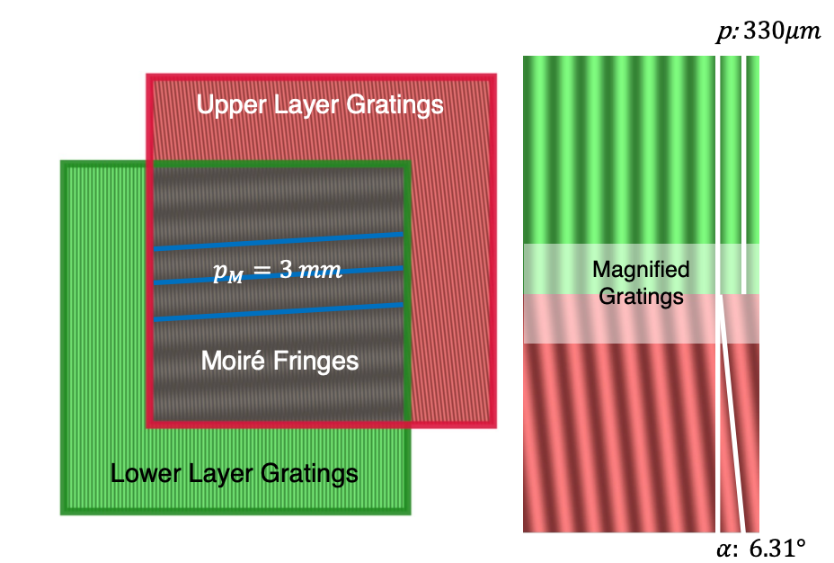
The prototype uses 330 μm gratings, a 6.31° angular offset, and approximately 3 mm observable fringes.
A geometric amplifier, not an intensity marker.
Inflation or contact changes the ratio between upper- and lower-layer grating pitch. The resulting low-frequency pattern remains visually salient even with moderate defocus.
Grating pitch
330 μm
Camera
1920 × 1080
Lens
160° field of view
Excitation
455–485 nm LED ring
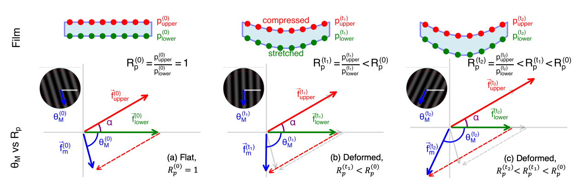
Flat, moderately deformed, and more strongly deformed states rotate the observable fringe direction as the layer pitch ratio changes.
A transparent cover preserves pre-contact vision. A fluorescent lower grating and filtered internal lighting maintain fringe contrast under changing ambient light.
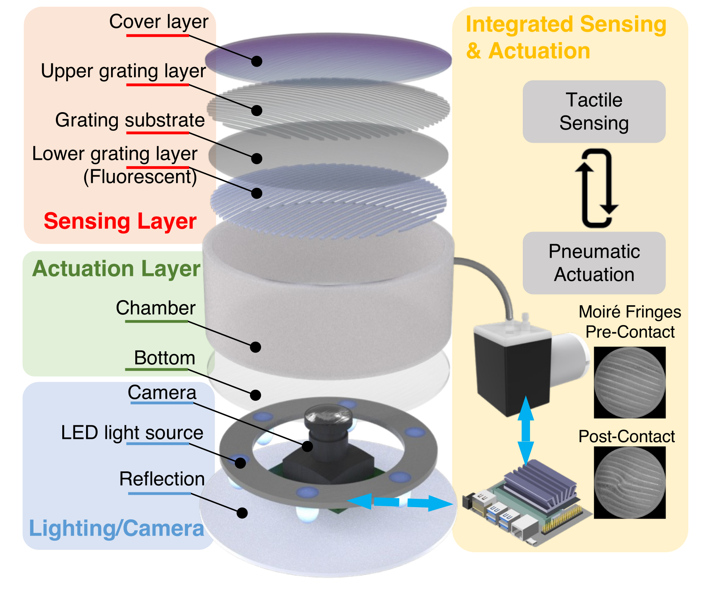
One stack combines the flexible sensing layer, air chamber, lighting, camera, and pneumatic controller.
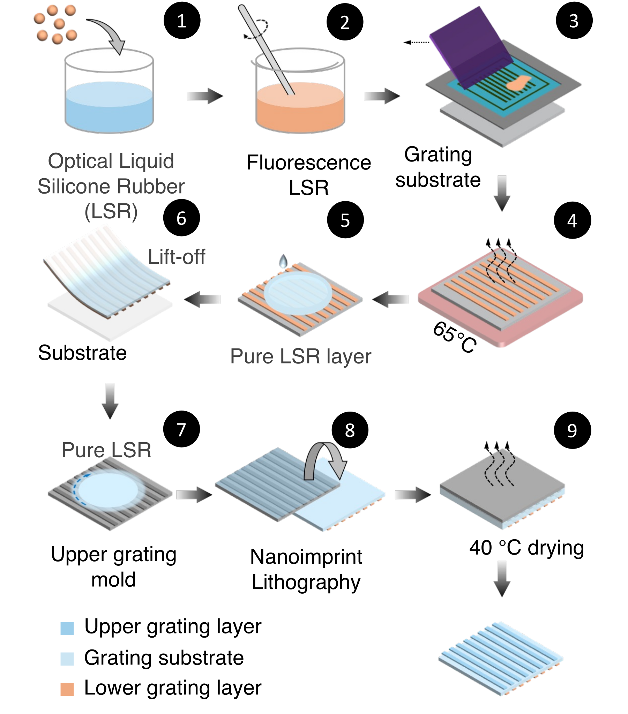
Soft lithography and nanoimprint transfer form the dual-sided LSR grating film; the lower grating carries fluorescent material.
Cold-start calibration
Find the flat zero-state without pressure sensors.
A one-time material model is fitted with two temporary barometers. During normal cold starts, the barometers are removed: peripheral and central fringe orientation identify ΔB = 0, compensating for atmospheric-pressure and lighting drift.
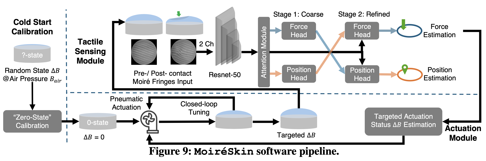
Visual zero-state calibration anchors both tactile inference and closed-loop pneumatic control.
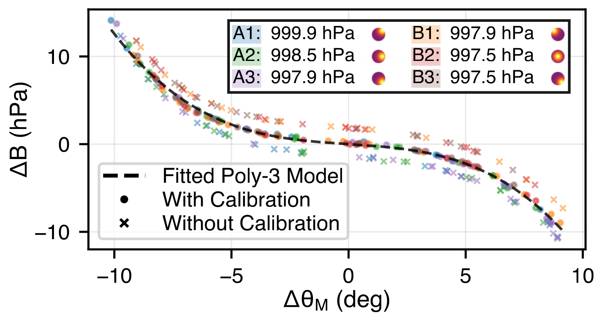
Six sessions vary ambient pressure and illumination. Calibration restores the shared pressure–fringe mapping.
> 0.994R² after zero-state calibration
85%maximum RMSE reduction
1.771 → 0.151 hPaΔB MAE in high-drift sessions
≈ 2 spneumatic and zero-state convergence
Cold start and actuation — synchronized viewsThe sensor fringe field and physical membrane are shown on the same timeline while the controller traverses candidate pneumatic states.
Tactile inference
Two images, two stages, two operating ranges.
The model takes pre- and post-contact grayscale fringe images as a two-channel input. A modified ResNet-50 with attention feeds coarse force and position heads, then cross-coupled refinement heads account for position-dependent force response on the inflatable surface.
Measured contact-estimation configurations
Configuration
Force range
Actuation state
Force MAE
Position MAE
Tiny probe
0–0.4 N
ΔB = 0
3.78 mN
0.094 mm
Large probe
0–4 N
ΔB ∈ [−11, +12] hPa
0.033 N
0.15 mm
General-force setting
0–4 N across randomized actuation states
Force remains highly linear across the full range; 94.9% of force errors are below 0.1 N.
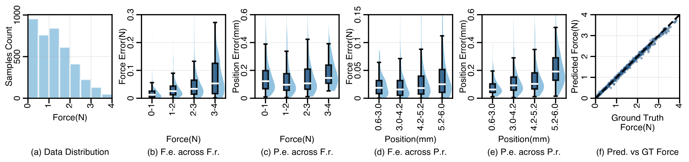
Tiny-force setting
0–400 mN at the calibrated zero-state
Error bars typically remain below 15 mN, including near the upper end of the tiny-force range.
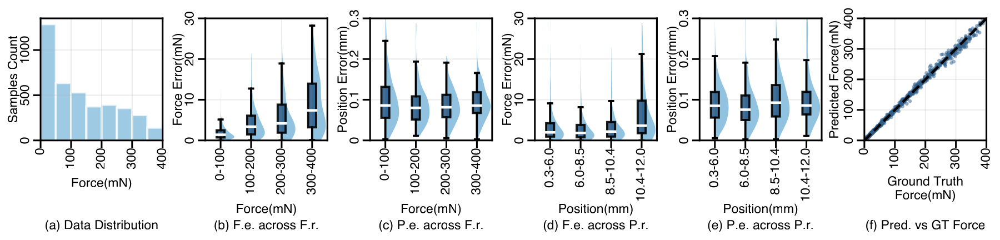
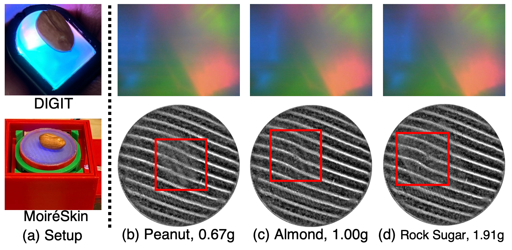
Under 0.67–1.91 g objects, DIGIT shows little visible change while MoiréSkin produces localized fringe distortion.
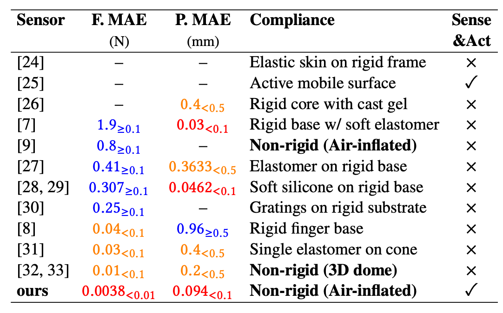
Benchmark context: the prototype combines a non-rigid, air-inflated interface with joint sensing and actuation.
Video artifacts
Watch the sensing layer respond.
These clips are extracted from the supplied project decks and compressed for the web. They show raw internal fringe views beside the physical interactions that created them.
Gram-scale lightweight contactLow-mass objects produce visible local fringe bending in the internal sensor view.Direct hand interaction — synchronized viewsThe internal fringe response is paired frame-for-frame with the fingertip pressing and sweeping across the membrane.Softness probing — synchronized viewsThe internal tactile signature is shown beside the external active probe between ΔB = 0 and +41.25 hPa.
Integrated sensing–actuation studies
Controlled studies connect precision to tasks.
Both studies use a fixed bench-vise setup to isolate tactile changes from grasp motion. The higher +41.25 hPa actuation state is fine-tuned beyond the standard −11 to +12 hPa tactile-training range.
Study 1 · ultra-soft materials
Seven stiffness classes, two-state active probing.
Seven spheres span 8.73–21.72 kPa Young’s modulus. The pretrained general-force backbone supplies 2048-dimensional features; LDA reaches 92.7% at 5-shot and 99.7% at 10-shot over 60 sessions.
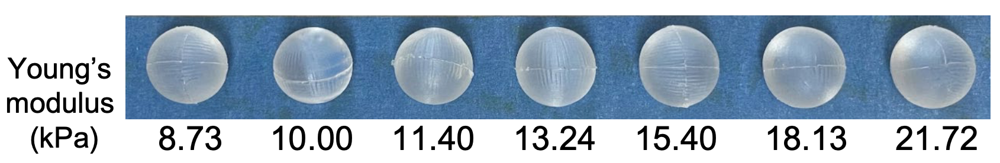
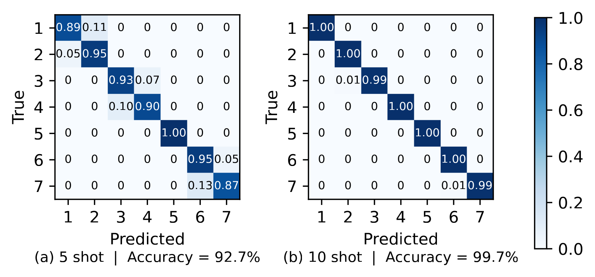
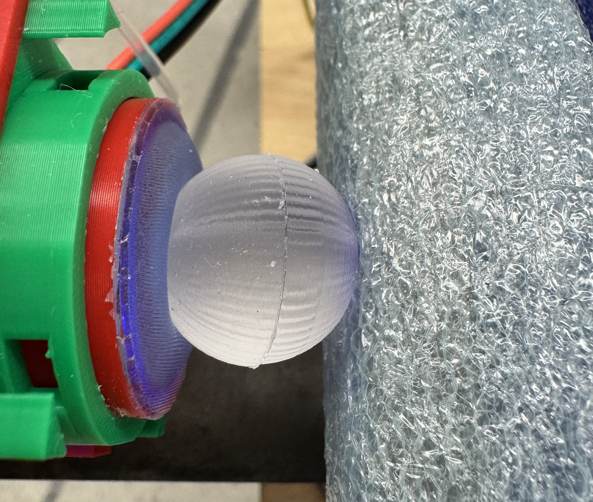
Study 2 · dynamic shear load
Track changing liquid mass from shear-force cues.
Water is added from 0 to approximately 300 mL while the cup remains at fixed position and actuation state. Across six sessions, the model reaches 4.1462 ± 0.5994 g MAE and 4.7517 ± 0.5353 g RMSE.
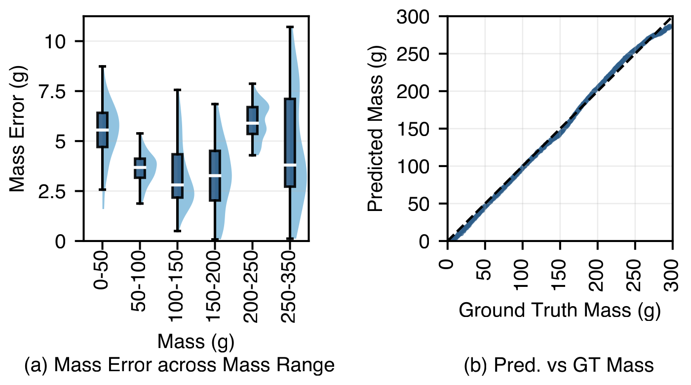
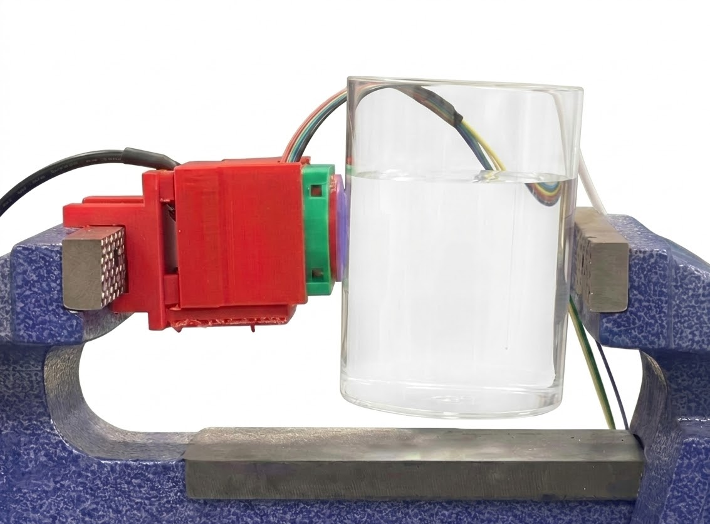
See-through function
Observe the object before contact.
The transparent cover preserves visual access while fluorescent gratings and internal illumination keep the moiré signal readable. The prototype demonstrates a power adapter, USB-A connector, and phone display through the sensing layer.
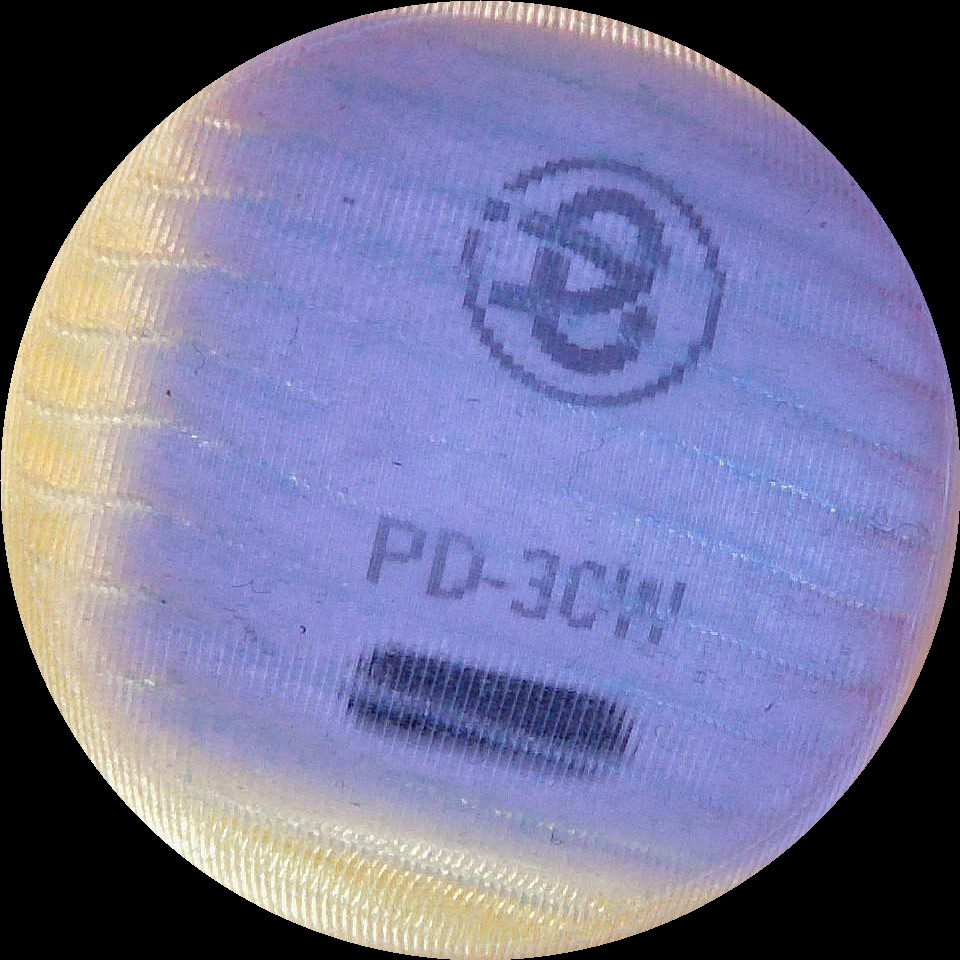
Power adapter
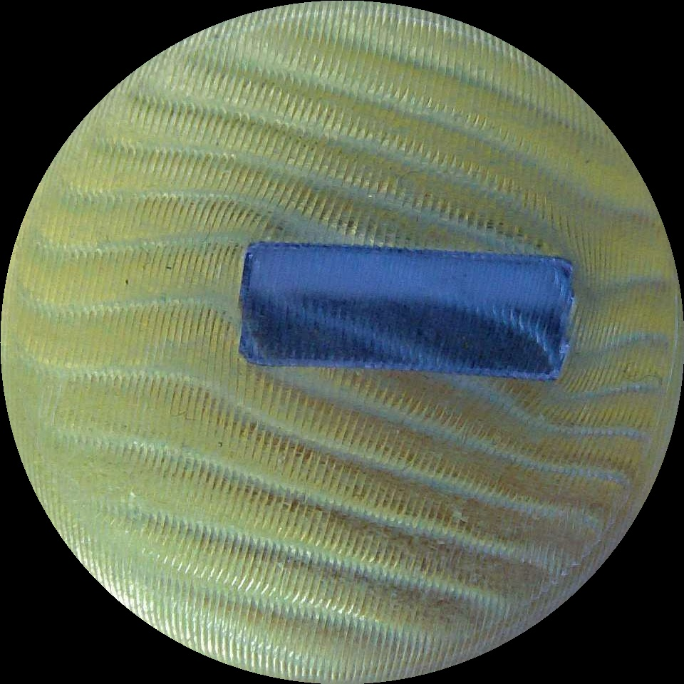
USB-A connector
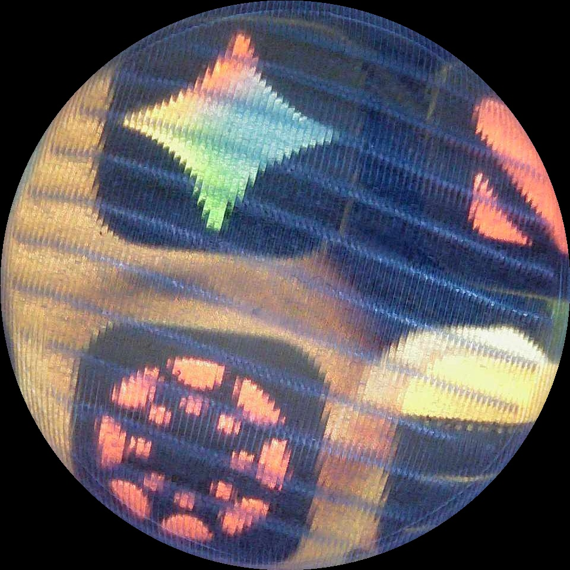
Phone display
Evidence boundary
What the current prototype establishes.
Demonstrated: tactile force and position sensing, visual pneumatic-state estimation, see-through imaging, and two controlled fixed-vise sensing–actuation studies.
Not yet demonstrated: a self-contained untethered device, larger-area skin, or closed-loop robotic manipulation on an end effector.
Next: larger sensing areas, geometry-diverse and fragile contacts, onboard computation, fatigue testing, and closed-loop robot tasks.